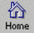
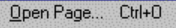

Netscape Guided Tour
Button
Toolbar
The toolbar offers the following basic navigational button links, starting from the left:
- Back
- The Back button takes you to the previous page in the history list. The history list is a reference to pages you have viewed.
- Forward
- Clicking on the Forward button brings up the next page in the history list. (Available only after using the Back command or a history menu item.)
- Home

- The Home button links to the home page designated in your preferences.
- Open

- When clicked, the Open button produces a dialog box that allows you to visit any page whose URL you can supply.
Try using the Back button to return to the Capabilities Page.
Or you can click here and go back if you get confused.
Take a look through Netscape Handbook, the online manual, for complete details on how to use the toolbar.
info@mcom.com
Copyright © 1994 Mosaic Communications Corporation.